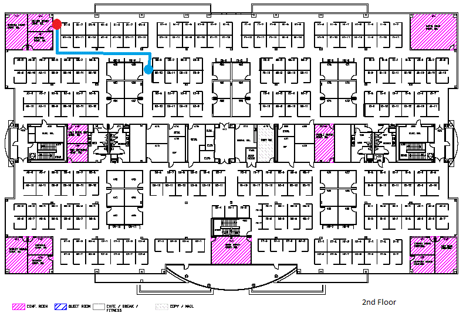
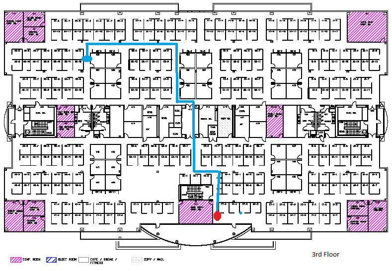
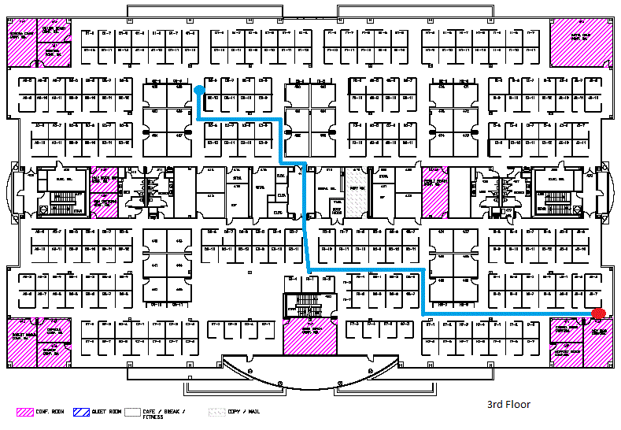
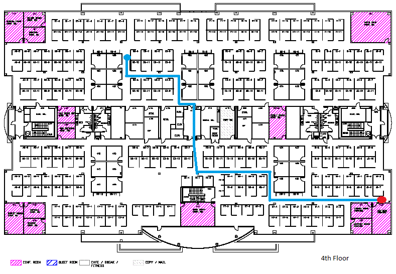
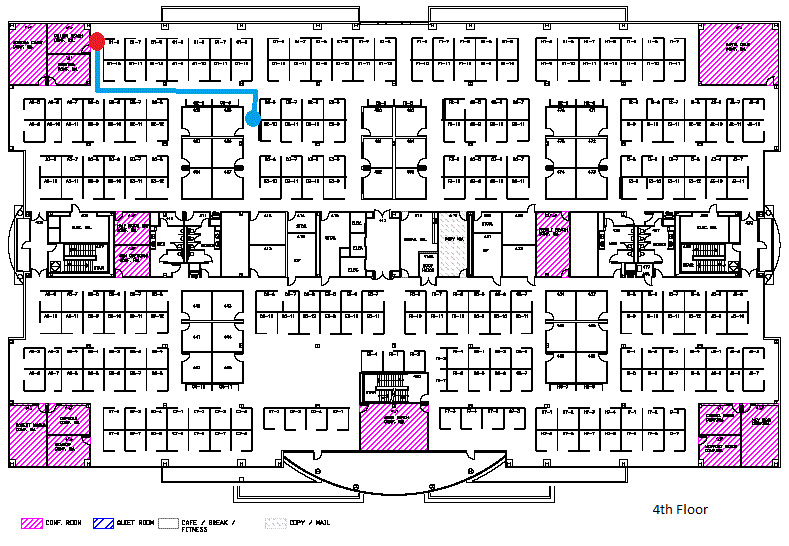

CMX Mobile App Server Simulator %version%
The following is a node.js server to simulate the CMX Mobile App Server required for the CMX Mobile Application. The server will run and listen for HTTPS requests and respond with simulated data. The application should only require to change the IP address of the server. The server uses HTTPS protocol which requires certificates to be generated.
Installation
-
First install node.js on a server. The image can be downloaded from http://nodejs.org/
-
Install the simulator by typing the command npm install cisco-cmx-mobile-app-server-simulator.tgz
-
Install the certificates needed for the server on windows by changing into the bin sub directory:
-
Run the script cergen.bat in the bin directory
-
The script will prompt for information for the certificates and generate three files in the install directory: server-cert.pem, server-csr.pem and server-key.pem
-
On other platforms you can run the same commands as the script
-
openssl genrsa -out server-key.pem 1024
-
openssl req -new -key server-key.pem -out server-csr.pem
-
openssl x509 -req -in server-csr.pem -signkey server-key.pem -out server-cert.pem
Starting Server
-
Launch the node.js prompt
-
Navigate to the install directory
-
Start the server by typing the command node cmxMobileAppServerSimulator.js
-
The command supports several options and the options can be displayed by using -h option node cmxMobileAppServerSimulator.js -h
-
To remove all currently registered IDs from the server use the option -r option node cmxMobileAppServerSimulator.js -r
-
To use a different device ID when a client registers use the option -d option node cmxMobileAppServerSimulator.js -d 770ab8ffe9ec
-
To list device IDs which can be used to register a new device use the option -l option node cmxMobileAppServerSimulator.js -l
-
The server should start running and indicate the port being used and the device ID used for new registered clients
Running Test
After the server is running a client can make HTTPS requests to get information about a simulated client. The location API is the only test interface which will return information dynamically when called repeatedly. The test can be performed in two ways. The first is where on each location call the client will return a new X,Y position until the client reaches some final position. On the next successive call the client will start again from the original starting point. All other API interfaces return static data defined in the test configuration files. The test can also be executed by manually moving the client device through the server web interface. A floor can be chosen and the device place on any spot on the map. When placed the device location will be updated on the client.
Automatic Client Update
This is the default execution of the test. When a device first registers with the server the client will be automatically updated. Different simulated clients may be chosen and the client will continuously move along the predefined route and return to the start when the end of the route is reached.. A device can stop being updated automatically by using the server demo interface.
Route for 001ab8ffe9ec
For the client with device ID 001ab8ffe9ec the following first floor route is used in the test
Route for 001ab8ffe9ed
For the client with device ID 001ab8ffe9ed the following first floor route is used in the test
Route for 001ab8ffe9ef
For the client with device ID 000ab8ffe9ef the following first floor route is used in the test
Route for 002ab8ffe9ec
For the client with device ID 002ab8ffe9ec the following second floor route is used in the test
Route for 002ab8ffe9ed
For the client with device ID 002ab8ffe9ed the following second floor route is used in the test
Route for 002ab8ffe9ef
For the client with device ID 002ab8ffe9ef the following second floor route is used in the test

Route for 003ab8ffe9ec
For the client with device ID 003ab8ffe9ec the following third floor route is used in the test

Route for 003ab8ffe9ed
For the client with device ID 003ab8ffe9ed the following third floor route is used in the test

Route for 003ab8ffe9ef
For the client with device ID 003ab8ffe9ef the following third floor route is used in the test
Route for 000ab8ffe9ec
For the client with device ID 000ab8ffe9ec the following fourth floor route is used in the test
Route for 000ab8ffe9ed
For the client with device ID 000ab8ffe9ed the following fourth floor route is used in the test

Route for 000ab8ffe9ef
For the client with device ID 000ab8ffe9ef the following fourth floor route is used in the test

Route for 770ab8ffe9ec
For the client with device ID 770ab8ffe9ec the following venue route is used in the test
Route for aa0ab8ffe9ec
For the client with device ID aa0ab8ffe9ec the Interop route with no POI info
Sending Push Notification
-
Launch the node.js prompt
-
Navigate to the install directory
-
Send a push notification by typing the command node cmxPushNotification.js -d <deviceId> -m "<message>"
-
The server should send the push notification and should show: Response: OK
Manual Client Update
The second method of executing a test is by manually moving the client location on the map. Once a client is placed on a map manually the automatic update of the client will stop. The client will only move when the client location is moved on the web interface map. To start the manual test navigate to the following link:
https://<serverAddress>:8082/demo/start
A page will be displayed showing the list of current devices registered with the server. If the device is not shown then make sure the mobile application is launched and registers with the server.
After selecting the device a list of floors to different venues are displayed. These are the available floors the client can be shown on.
After selecting the floor a map will be shown. At the top of the map are fields to enter a notification message, SSID, and SSID password. On the first click of the map a location icon will be displayed representing the current client location. On the first click the notification message and SSID information will be pushed to the mobile device. The notification simulates a user walking into a venue and receiving a mobile push notification to remind the user to launch the application. The SSID and password will be used to join the wireless network. When the application is launched the user will attempt to join the wireless network automatically using the mobile push notification metadata.
At the bottom of the map are another set of fields for entering a push notification message, SSID and SSID password. This message will be sent whenever the send button is depressed.
Once the client icon is place on the map the automatic updates will be stopped and the current location will be shown based upon the position selected on the current map.The location of the client can be changed be clicking on another position on the map. The location icon will be updated to the new position and the client application will be updated as well. The floor position can also be changed by going back and selecting another floor and positioning the location icon on the new floor.